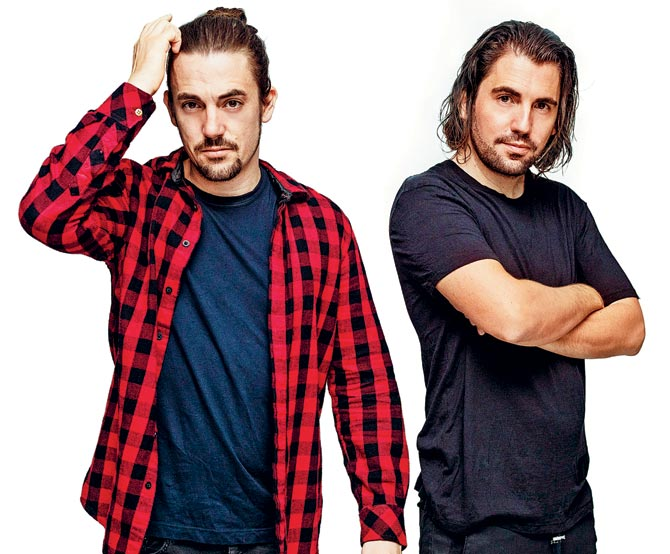
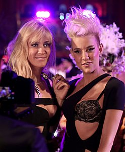
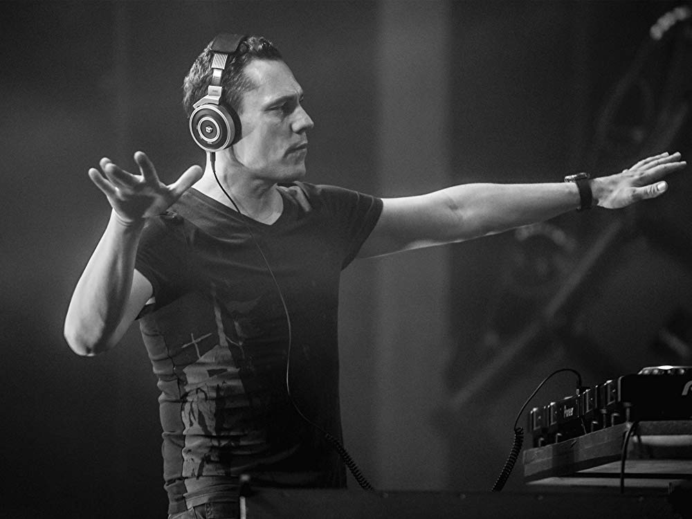

Dimitri Vegas & Like Mike
Dimitri Vegas & Like Mike è un duo di musica house formato nel 2007 dai fratelli belgi Dimitri Thivaios (Dimitri Vegas) e Michael Thivaios (Like Mike). Nel 2015 sono stati classificati come i DJs numero uno al mondo nella classifica 'Top 100 DJs' della rivista DJ Magazine. Sono inoltre gli autori di diversi inni di Tomorrowland, in collaborazione con diversi artisti come NERVO ed Afrojack.
David Guetta
Pierre David Guetta (Parigi, 7 novembre 1967) è un disc jockey e produttore discografico francese. Ha iniziato la sua carriera nella metà degli anni ottanta come DJ. Dal suo esordio al 2010 ha venduto oltre 3 milioni di album e 15 milioni di singoli in tutto il mondo. Nel 2010 era considerato uno dei più ricercati produttori musicali. Il 28 luglio 2017 è stato anche ospite a Padova, al PostePay Sound Festival.

NERVO
Le Nervo (stilizzato NERVO) sono un gruppo musicale australiano di musica elettronica fondato nel 2005 dalle sorelle gemelle Miriam e Olivia Nervo (Ivanhoe, 17 febbraio 1982), nate da genitori italiani. La loro carriera comincia all'età di 18 anni. Il successo arriva con il singolo When Love Takes Over, prodotto insieme a David Guetta e Kelly Rowland e vincitore di un Grammy Award.
Tiesto
Tiësto, pseudonimo di Tijs Michiel Verwest (Breda, 17 gennaio 1969), è un disc jockey e produttore discografico olandese. Tiësto è uno dei DJ producer più noti nell'ambito dell'electronic dance music. Fra i maggiori esponenti della musica trance, nonostante abbia poi avuto un cambiamento di stile producendo principalmente musica house. Artista pluripremiato, vanta un'esibizione alla cerimonia d'apertura dei Giochi olimpici di Atene 2004.
